Cara tulisan masuk, bergerak dan keluar (macam tab Animations).
Masuk (In)
T1 Taip huruf demi hurufT2 Pudar masukT3 Pop melantunT4 Zoom masukT5 Luncur dari tepiT6 Jatuh dari atasT7 Huruf berpusing
Berulang (Loop)
T8 Neon berkelipT9 Cahaya bersinar (glow)T10 Glitch rosakT11 Bayang 3DT12 Garis luar dilukisT13 Kilauan emasT14 BergegarT15 Berdenyut ikut rentakT16 Beralun ombakT17 Melantun sekata
Sari kata
T18 KaraokeT19 Satu perkataan satu masaT20 Kotak latar bulatT21 Highlight penanda
Keluar (Out)
T22 Pudar keluarT23 Pecah berderaiT24 Padam & taip semula
Masuk 2 (In)
T25 Naik per hurufT26 Selang-seli kiri kananT27 Kabur ke fokusT28 Jarak huruf merapatT29 Skala elastik berturutanT30 Tirai singkapT31 Imbasan laserT32 Huruf terbalik masuk
Berulang 2 (Loop)
T33 Ayunan bandulT34 TerapungT35 Warna pelangiT36 Kilauan bintangT37 Zoom bernafasT38 Cahaya menyapuT39 Bayang berputarT40 Huruf melompatT41 Pecah warna RGBT42 Putar 3D mendatarT43 Kabur berdenyutT44 Bara api
Sari kata 2
T45 Perkataan dalam label warnaT46 Perkataan aktif menyalaT47 Gulung dua barisT48 Kotak penanda bergerakT49 Taip dalam bar hitamT50 Perkataan terbang masuk
Rupa tulisan: garis, cahaya, warna, tekstur (macam tab Effects).
S1 Putih garis hitamS2 Sticker potong putihS3 Garis bergandaS4 Cahaya kuningS5 Neon unguS6 Neon garis biruS7 Bayang kerasS8 Blok 3DS9 Gradien emasS10 Gradien pelangiS11 ApiS12 AisS13 Krom perakS14 Retro 80-anS15 Komik popS16 Kertas koyakS17 Pita merahS18 Kapur papan hitamS19 Grunge lusuhS20 Glitch RGBS21 HologramS22 Bayang panjangS23 Garis luar sahajaS24 Kotak tebuk (knockout)S25 Highlight penandaS26 Tulisan markerS27 Graffiti semburanS28 Seram menitisS29 Kotak merah putihS30 Berita kuning-hitamS31 Pantulan cerminS32 Piksel 8-bitS33 Timbul (emboss)S34 Kaca bekuS35 Bayang lembutS36 Dua warna neon
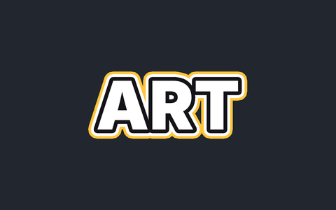
S37 Tiga garis berlapis
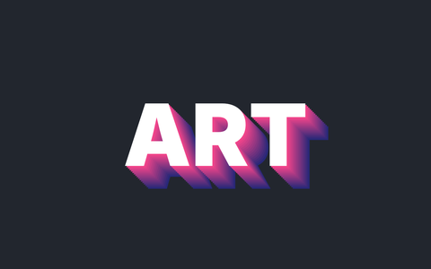
S38 Bayang diagonal berlapis
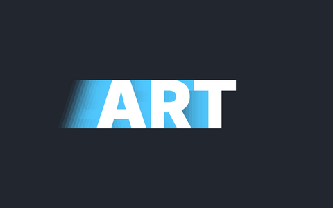
S39 Jejak kelajuan
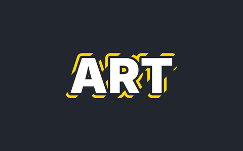
S40 Garis luar putus-putus
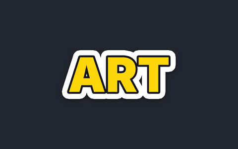
S41 Sticker kuning
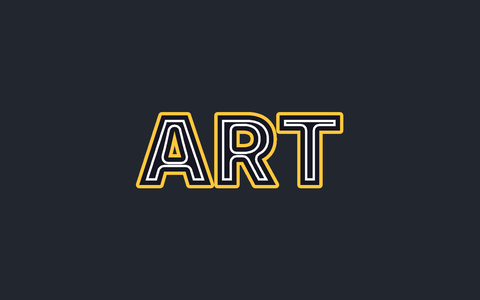
S42 Garis dalam (inline)
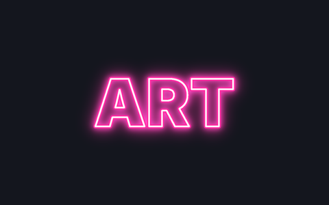
S43 Neon tiub merah jambu
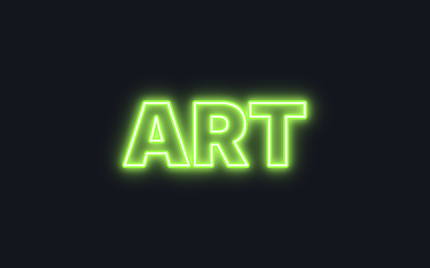
S44 Neon hijau limau
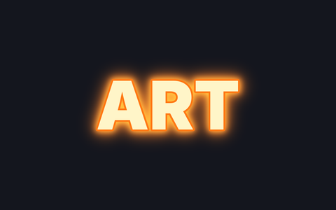
S45 Neon oren panas
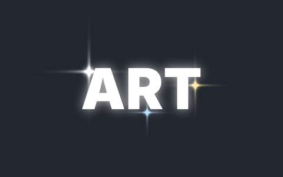
S46 Cahaya bintang
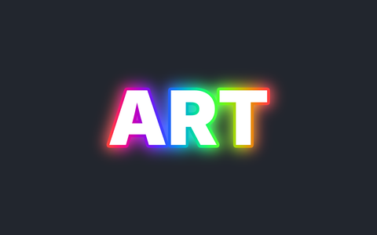
S47 Aura pelangi
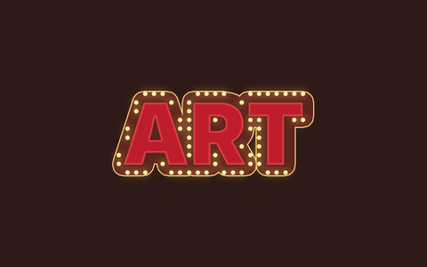
S48 Lampu pawagamS49 Matahari terbenam
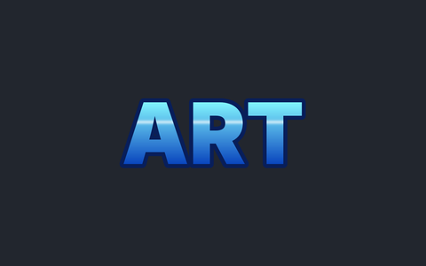
S50 Samudera
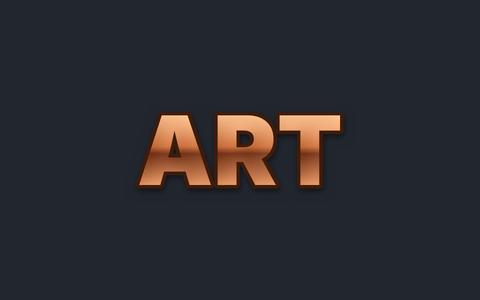
S51 Tembaga berkilat
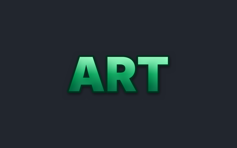
S52 Zamrud
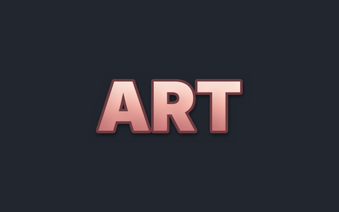
S53 Emas jambu (rose gold)
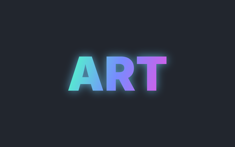
S54 Aurora
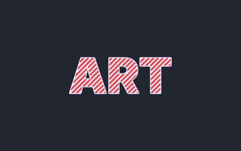
S55 Gula-gula berjalur
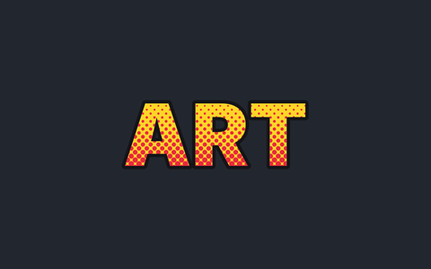
S56 Titik pop art
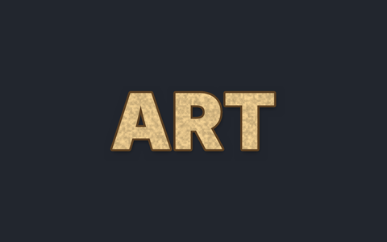
S57 Pasir berbutir
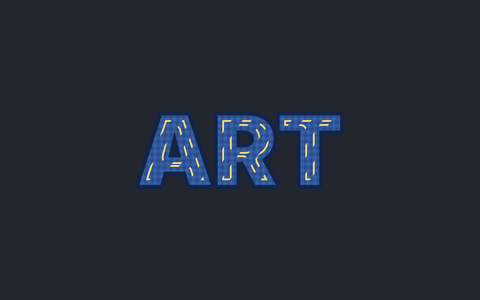
S58 Jahitan denimS59 Kertas potong berlapis
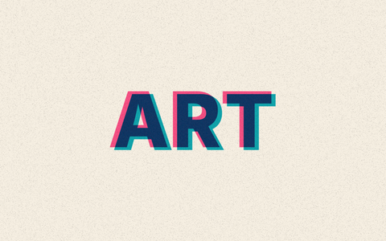
S60 Cetakan risograf
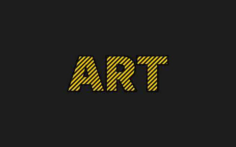
S61 Pita amaranS62 Papan LED titik
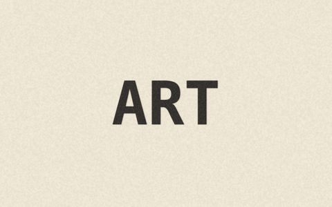
S63 Mesin taipS64 Krom biru kaca
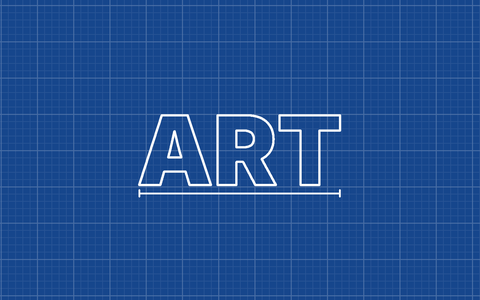
S65 Pelan biruprint
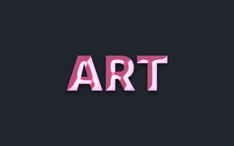
S66 Belon kembung
🔤 Fon · F1–F1895
Rupa fon sebenar. Balas AI dengan kod F + nombor, contoh: F58 atau F1 + F23 (tajuk + sari kata). Jawi: J5. Semua fon Google Fonts (percuma untuk video).
Tebal / Tajuk Viral · 1–10, 71–80
Bersih / Moden · 11–20
Klasik / Serif / Vintaj · 21–30, 81–90
Tulisan Tangan / Skrip · 31–40, 91–100
Tema / Unik · 41–50
Mesin Taip / Komputer Lama / Hacker · 51–70 (+41, 42)
📄 Katalog penuh 1–1895 (PDF, buka dalam Google Drive)
B1 Gelembung cakap bulatB2 Gelembung fikir awanB3 Letupan WOWB4 Jerit tajamB5 Sembang telefonB6 Nota melekat kuningB7 Kertas bergarisB8 Reben sepandukB9 Tag hargaB10 Bar bawah (lower third)B11 Kad notifikasiB12 Tetingkap retroB13 Anak panah tunjukB14 Lencana bulatB15 Pita pelekatB16 Papan kayuB17 Kotak kapsyen komikB18 Butang ikut (follow)B19 Kad petikanB20 Papan amaranB21 Tanda soalan kuizB22 Label kiraan detikB23 Bar sari kata hitamB24 Lencana Jawi
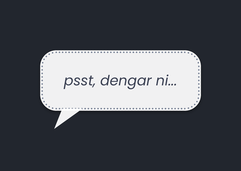
B25 Gelembung bisik
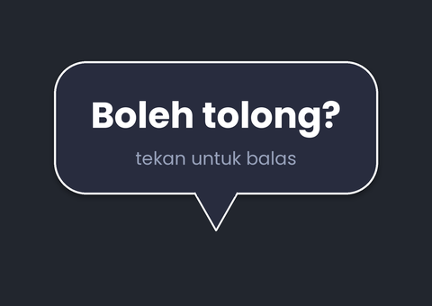
B26 Gelembung kotak gelap
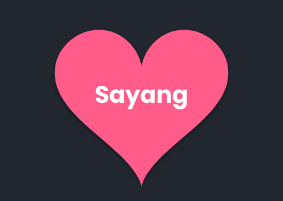
B27 Gelembung hatiB28 Mesej sembang hijau
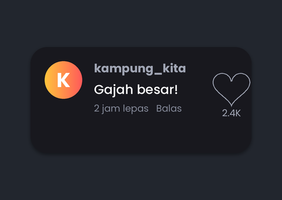
B29 Komen video
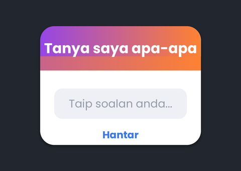
B30 Kad tanya saya
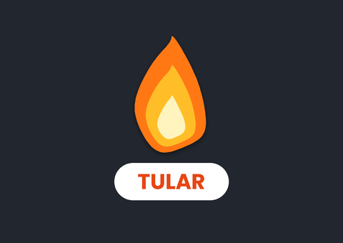
B31 Lencana tularB32 Letupan diskaunB33 Reben sudut BAHARUB34 Meterai ASLI
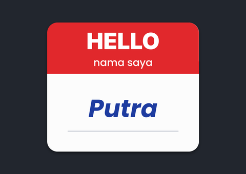
B35 Tag nama HELLO
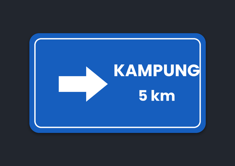
B36 Papan tanda jalan
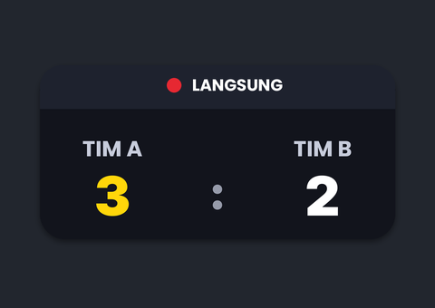
B37 Papan markah
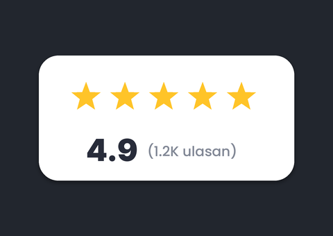
B38 Kad penilaian bintangB39 Kad harga langganan
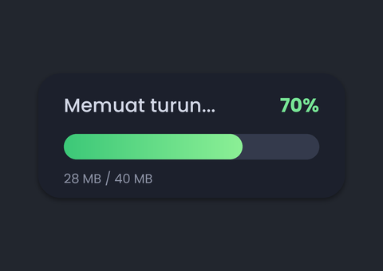
B40 Bar kemajuan muat turun
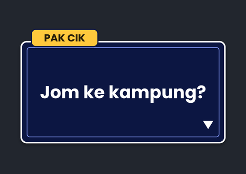
B41 Kotak dialog permainan
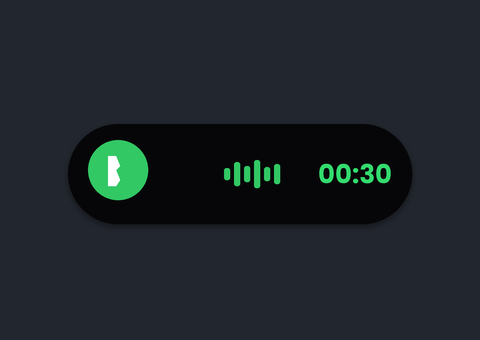
B42 Pil pemasa telefon
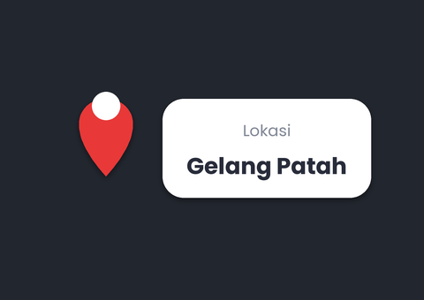
B43 Penanda lokasiB44 Label hashtag
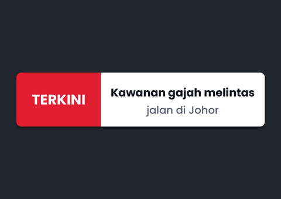
B45 Pita berita TERKINI
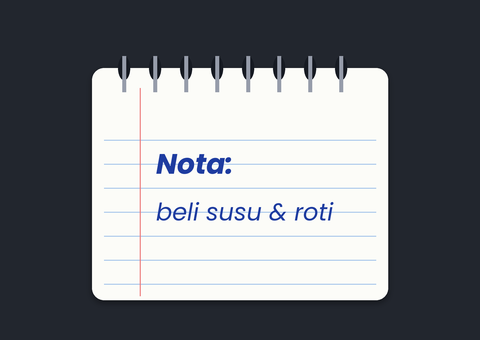
B46 Nota buku berpilin
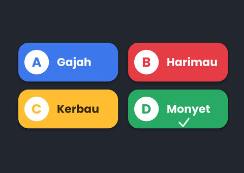
B47 Pilihan jawapan kuiz
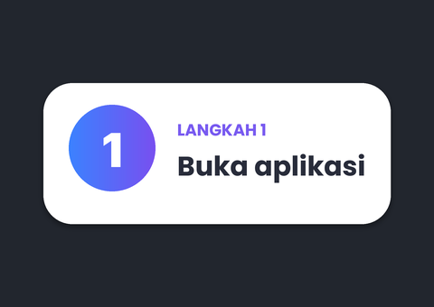
B48 Label langkah
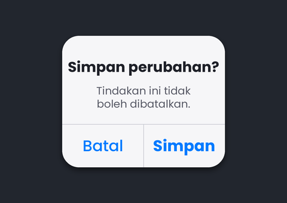
B49 Kotak amaran telefon
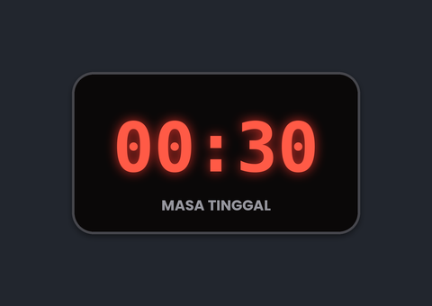
B50 Jam LED merah
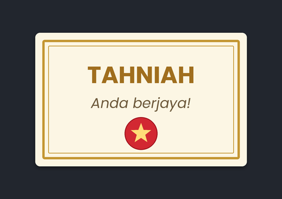
B51 Sijil tahniah
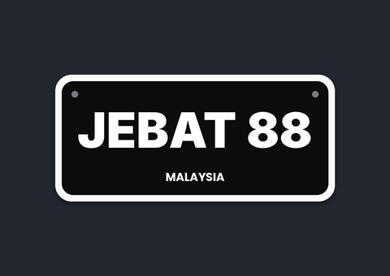
B52 Plat nombor kereta
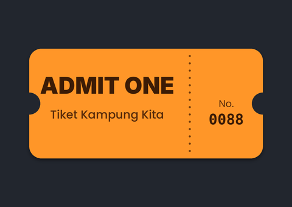
B53 Tiket masuk
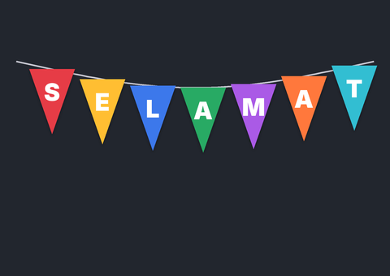
B54 Bunting bendera
🔷 Bentuk Geometri · K1–K80
Bentuk bergerak untuk hiasan, latar dan bingkai tajuk.
K1 Bulatan berdenyutK2 Segi empat berpusingK3 Segi tiga berputarK4 Heksagon dilukisK5 Bintang berputarK6 Berlian berkilatK7 Gelombang bulatanK8 Kubus 3D berputarK9 Sfera dawaiK10 Grid titik beralunK11 Jalur bergerakK12 Corak isometrikK13 Mandala geometriK14 Bentuk terapung (latar)K15 Bingkai tajuk geometriK16 Spiral berputarK17 Poligon berubahK18 Bar equalizerK19 Orbit planetK20 Konfeti geometri
Bentuk berputar & berdenyut
K21 Segi lima berpusingK22 Bintang enam penjuruK23 Tiga cincin mengorbitK24 Gelang meluasK25 Bunga kelopak berputarK26 Kotak jadi bulatanK27 Segi empat bergelombangK28 Bunga kehidupanK29 Tiga segi tiga berkejaranK30 Heksagon pecah cantumK31 Berlian bersarang berdenyutK32 Gelung muat semula
Garis & jaringan
K33 Jaringan nodK34 Tenunan tali bulatanK35 Lengkung LissajousK36 Kipas garis sudutK37 SpirografK38 Gelombang sinus berlapisK39 Grid riak airK40 Imbasan radarK41 Pokok fraktal berayunK42 Bintang poligon taliK43 Heliks bergandaK44 Garis degupan jantung
Corak penuh frame
K45 Mozek segi tiga berombakK46 Sarang heksagon bernafasK47 Bulatan bertindih bergerakK48 Jalur silang bertentanganK49 Corak ombak JepunK50 Titik grid warna mengalirK51 Terowong segi empatK52 KaleidoskopK53 Corak berlianK54 Pusaran bunga matahariK55 Anyaman kotakK56 Corak moire
Bingkai & hiasan
K57 Garis bingkai berjalanK58 Penjuru kurung bersinarK59 Bingkai berlapis berdenyutK60 Pembahagi hiasanK61 Lengkung penjuruK62 Bingkai bintang berkelipK63 Garis sorotan tengahK64 Segi tiga naikK65 Bingkai gerbangK66 Lencana heksagon
Wireframe 3D
K67 Piramid dawaiK68 Oktahedron dawaiK69 Ikosahedron dawaiK70 Torus dawaiK71 Silinder dawaiK72 TesseractK73 Dua kubus bertentanganK74 Heliks DNA 3D
Zarah & gelombang
K75 Gelombang titikK76 Hujan titikK77 Letupan garisK78 Gelombang interferensK79 Galaksi berputarK80 Garis kontur mengalir
✏️ Doodle · D1–D54
Lukisan tangan yang dilukis sendiri di skrin: penanda, hiasan, emosi, bingkai.
D1 Anak panah melengkungD2 Bulatan tandaD3 Garis bawahD4 Pangkah XD5 Tanda betul ✓D6 Bintang berkelipD7 Kilauan ✨D8 Hati berdenyutD9 AwanD10 Matahari berputarD11 PetirD12 PercikanD13 Garis terkejut !!D14 Titik peluhD15 Tanda soalanD16 Garis lajuD17 Bingkai tanganD18 Kotak contenganD19 RebenD20 Jejak titik-titikD21 Gajah doodleD22 Rumah kampungD23 Pokok kelapaD24 Roda gear berputarD25 Mentol ideaD26 MataD27 Muka senyumD28 Awan hujanD29 JamD30 TelefonD31 Buku terbukaD32 KeretaD33 BasikalD34 BungaD35 Burung terbangD36 Bulan sabit & bintangD37 KunciD38 SyilingD39 Gelombang suaraD40 Lif naik turunD41 EskalatorD42 RoketD43 Spanar & natD44 KameraD45 Pasu pokokD46 PayungD47 Kopi panasD48 MasjidD49 Perahu layarD50 Kapal terbangD51 GuntingD52 PenselD53 MikrofonD54 Hati retak
🖼️ Watermark & Latar · W1–W30
Tulisan watermark, latar bergerak dan corak penuh satu frame. Contoh guna teks "NAMA ANDA", nanti ditukar kepada nama kau.
Watermark berulang
W1 Teks ulang pepenjuruW2 Teks ulang pepenjuru bergerakW3 Tanda bulatan berulangW4 Perkataan besar pudarW5 Tanda empat sudutW6 Watermark sudut bawah kananW7 Baris teks bergerakW8 Teks gelang berputarW9 Kisi tanda tambahW10 Cap ASAL menghentak
Latar bergerak
W11 Gradien mengalirW12 Bokeh naikW13 Grid perspektif retroW14 Gelombang berlapisW15 Gumpalan lavaW16 Jalur pepenjuru bergerakW17 Hujan digitalW18 Bintang malam berkelipW19 Konfeti jatuhW20 Sapuan cahaya
Corak penuh frame
W21 Halftone bergelombangW22 Heksagon berdenyutW23 Riak gelangW24 Kertas grid biruprintW25 Buku tulis bergarisW26 Papan catur bergerakW27 Pucuk rebung (songket)W28 Sisik ikanW29 Bingkai emas penuhW30 Bingkai filem lama